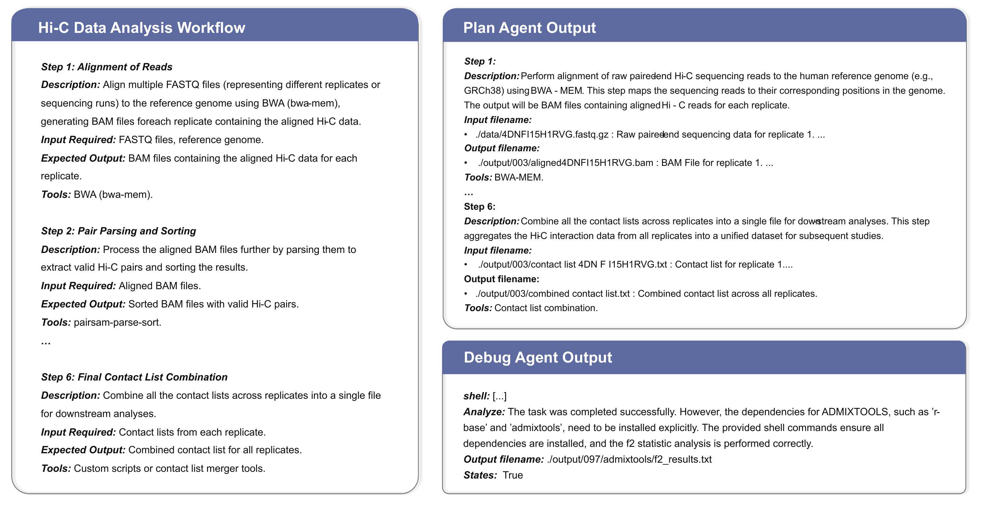
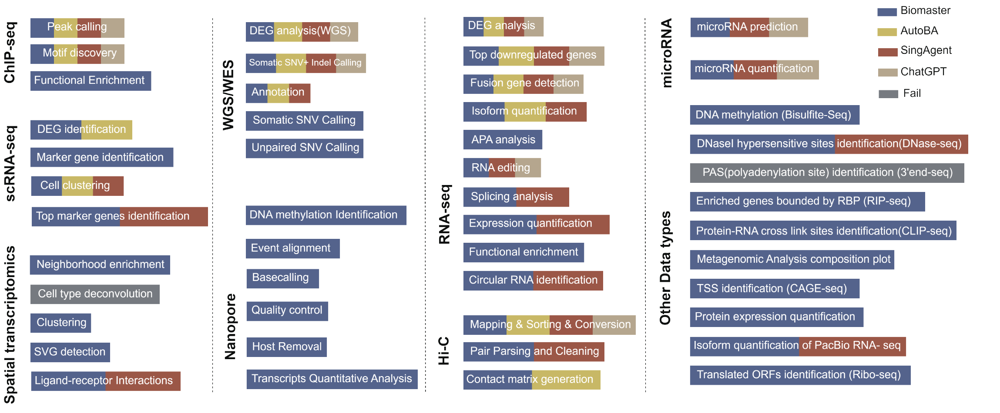
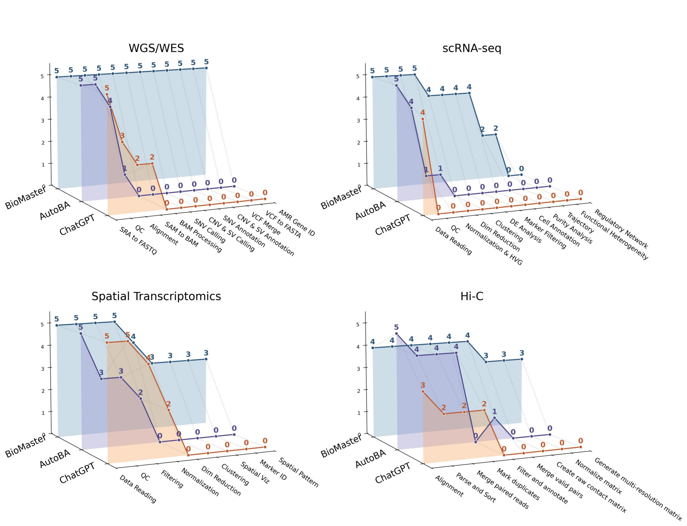
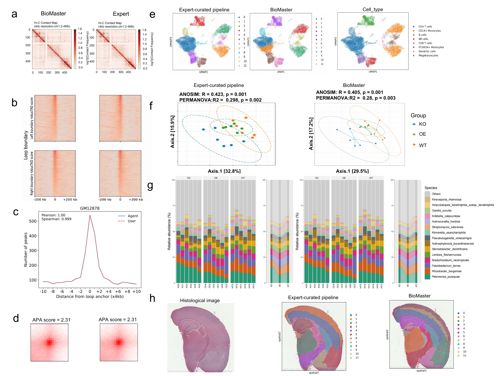

Transcriptomics
Differential expression, expression quantification, splicing analysis, APA, RNA editing, functional enrichment, and single-cell workflows.
Benchmark
BioMaster supports diverse omics workflows and was evaluated on 49 tasks spanning 102 bioinformatics tools.

Supported workflows
Differential expression, expression quantification, splicing analysis, APA, RNA editing, functional enrichment, and single-cell workflows.
WGS/WES variant analysis, ChIP-seq peak calling, motif discovery, DNA methylation analysis, and DNase-seq related workflows.
Spatial clustering, cell type annotation, ligand-receptor analysis, Hi-C mapping, pair processing, and contact matrix generation.
Task coverage
Completed 47 of 49 tasks, corresponding to a 95.9% execution success rate.
Completed 24 of 49 tasks using a single merged knowledge base.
Completed 13 of 49 tasks under the same tool-level Execute KB setting.
Completed 12 of 49 tasks without an external knowledge base.
| System | Completed tasks | Success rate | Key distinction |
|---|---|---|---|
| BioMaster | 47 / 49 | 95.9% | Multi-agent loop with Plan RAG, Execute RAG, Debug Agent, and Check Agent. |
| SingleAgent | 24 / 49 | 49.0% | Single-agent baseline using merged planning and execution knowledge. |
| AutoBA | 13 / 49 | 26.5% | Single-agent pipeline executor with tool-level knowledge. |
| ChatGPT | 12 / 49 | 24.5% | General-purpose LLM baseline without external BioMaster knowledge bases. |

Multi-step workflows
The benchmark included representative long workflows such as Hi-C, single-cell RNA-seq, spatial transcriptomics, and WGS/WES. BioMaster showed stronger stepwise completion across full workflows.

Case studies
BioMaster generated contact matrices visually consistent with manual workflows, with SCC values exceeding 0.99 across chromosomes in the reported evaluation.
BioMaster recovered 12 transcriptionally distinct clusters in PBMC data with UMAP structures consistent with manual analysis.
Taxonomic profiles and sample separation were highly concordant with manual pipelines in the representative Arabidopsis root microbiome analysis.
Domain segmentation aligned with known mouse brain anatomy in the selected Visium case study.

Open models
The manuscript evaluates GPT-oss-120B, Qwen3-235B, Qwen3-30B, DeepSeek-R1, and Kimi-K2 across 26 representative tasks.
